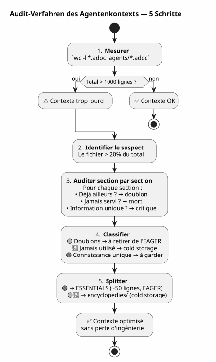

Audit des Kontext-Agenten: Wenn Ihre eigene Verwaltung das Problem wird — und wie Sie es ohne Verlust beheben können
Publié le 27 April 2026
- Die Szene: Sitzung 051, etwas stimmt nicht
- Der Audit : die 627 Zeilen auseinanderdröseln
- Die Angst, das Ingenieurwesen zu verlieren
- Die Lösung: encyclopädischer Split
- Der Inhalt der Datei ESSENTIALS
- Das Ergebnis: -50% EAGER-Kontext
- Warum heißt das Verzeichnis `encyclopedies/
- Die logische Fortsetzung der Serie
- Was ich anders gemacht hätte
- Der Leitfaden zum auditieren Ihres eigenen Kontextes
- Eine lebendige Governance
- Links
Sie haben Wochen damit verbracht, eine einwandfreie Agenten-Governance aufzubauen. Eager/Lazy, Sitzungsbeendigungsprozess, rotierende Backups. Das System läuft. Doch eines Tages wird der Agent langsam. Die Antworten sind verwässert. Sie messen: 1414 automatisch geladene Zeilen. Und das Schlimmste ist, dass der Schuldige nicht der Code, nicht das Backlog und nicht die Sitzungsarchive ist. Der Schuldige ist die Datei, die Ihre Methode dokumentiert.
- Tick
-
[]
Die Szene: Sitzung 051, etwas stimmt nicht
-
April 2026, 16:00. Ich bin mitten in einer Sitzung über`magic-stick`, mein Projekt zum Build des Linux-Live-ISO. Der Opencode-Agent hat meine Eager-Dateien automatisch geladen, wie üblich —
AGENT.adoc,PROMPT_REPRISE.adoc,.agents/INDEX.adoc. Alles ist normal.
Aber die Antworten sind schwach. Der Agent braucht zwei Sekunden länger zum Nachdenken. Er vergisst ein Detail, das er drei Nachrichten zuvor noch vor Augen hatte. Das ist kein Absturz, kein Fehler — es ist eine langsame Verschlechterung, die Art, die man nicht sofort bemerkt.
Ich hatte das schon bei Session 048 erlebt, als ich herausfand, dass die Governance-Dateien insgesamt 5200 Zeilen wogen. Ich hatte dann das Hot/Warm/Cold-Mechanismus mit seinem 10‑Sessions‑Schiebefenster, seinen identischen kalten Wellen und seinem Sensor mit zwei Auslösern konzipiert. Das Problem war gelöst. In der Theorie.
Aber jetzt sind wir bei Sitzung 051. Die Backup-Rotation hat stattgefunden — die EAGER-Dateien sind von 2087 auf 500 Zeilen gesunken. Dennoch bleibt der Kontext schwer. Irgendwas entgeht mir.
Ich öffne ein Terminal und tippe:
wc -l AGENT.adoc AGENT_MODUS_OPERANDI.adoc PROMPT_REPRISE.adoc \
.agents/INDEX.adoc .agents/SESSIONS_HISTORY.adoc \
.agents/archives/COMPLETED_TASKS_ARCHIVE_2026-04.adoc 287 AGENT.adoc
627 AGENT_MODUS_OPERANDI.adoc
51 PROMPT_REPRISE.adoc
218 .agents/INDEX.adoc
18 .agents/SESSIONS_HISTORY.adoc
213 .agents/archives/COMPLETED_TASKS_ARCHIVE_2026-04.adoc
1414 total1414 Zeilen. Die Backup-Rotation hat in INDEX, SESSIONS_HISTORY und COMPLETED_TASKS gut aufgeräumt — sie sind sauber. Aber es gibt einen Elefanten im Raum, den ich nicht gesehen habe:627 Zeilenin einer einzigen Datei.AGENT_MODUS_OPERANDI.adoc.
Dies ist die Datei, die ich in Session 1 geschrieben habe, um die Eager/Lazy-Strategie zu dokumentieren. Es ist das Handbuch der Methode. Und es ist allein zu 44 % des EAGER-Kontextes geworden.
Failed to generate image: PlantUML preprocessing failed: [From <input> (line 8) ] @startuml skinparam backgroundColor #FEFEFE title Kontext EAGER — 1414 Zeilen rectangle "AGENT_MODUS_OPERANDI **627 Zeilen (44%)**" as MOD #FFCDD2 rectangle "AGENT.adoc 287 Zeilen (20%)" as AG #BBDEFB ^^^^^ Syntax Error? (Assumed diagram type: activity) @startuml skinparam backgroundColor #FEFEFE title Kontext EAGER — 1414 Zeilen rectangle "AGENT_MODUS_OPERANDI **627 Zeilen (44%)**" as MOD #FFCDD2 rectangle "AGENT.adoc 287 Zeilen (20%)" as AG #BBDEFB rectangle "INDEX.adoc 218 Zeilen (15%)" as IDX #C8E6C9 rectangle "COMPLETED_TASKS 213 Zeilen (15%)" as ARC #FFF9C4 rectangle "PROMPT_REPRISE 51 Zeilen (4%)" as PRO #E1BEE7 rectangle "SESSIONS_HISTORY 18 Zeilen (1%)" as HIS #FFE0B2 note bottom of MOD Le fichier qui documente la méthode est devenu le plus gros poste de dépense end note @enduml
Die Ironie ist total. Die Datei, die dazu gedacht war, Kontext zu einsparen, ist zum Haupt*verbraucher* von Kontext geworden. Es ist, als würde das Handbuch deines Autos schwerer wiegen als der Motor.
Der Audit : die 627 Zeilen auseinanderdröseln
Ich beschließe, eine Abschnitt-für-Abschnitt-Prüfung durchzuführen. Nicht zum Löschen — sondern um zu verstehen, was es wert ist, in EAGER zu sein, und was anderswo ohne Wissensverlust existieren könnte.
Hier ist die genaue Struktur von`AGENT_MODUS_OPERANDI.adoc`und was ich dort finde:
Abschnitt |
Zeilen |
Inhalt |
Bereits vorhanden in… |
P1 — Übersicht |
64 |
Problem gelöst, Grundprinzipien, Analogie Armaturenbrett vs Handbuch |
(Empty output) |
P2 — Struktur der Dateien |
97 |
Baumstruktur, Ladepolitik, wann was laden |
— |
P3 — Absolute Regeln |
34 |
Git verboten, zerstörerische Befehle verboten, Geheimnisse verboten |
|
P4 — Lebenszyklus der Sitzung |
133 |
Template Öffnung, Arbeitsregeln, 6 Schritte Sitzungsende, Checkliste |
|
P5 — Metriken und Schwellenwerte |
49 |
ideale Session (15-30 Min, 1-3 Dateien), Warnzeichen |
— |
P6 — Sitzungstypen |
72 |
Erkennungstabelle, Vorschlagsformat, Ausnahmen |
— |
P7 — Kontinuierliche Verbesserung |
39 |
Tracking-Metriken, wöchentliche Überprüfung |
— |
P8 — Start-Checkliste |
13 |
Neues Bootstrap-Projekt |
[Nothing to output - the response is empty] |
P9 — Referenzen |
30 |
Referenzdateien, externe Ressourcen |
|
Anhänge A+B |
42 |
Glossar, Versionshistorie |
— |
Das Urteil ist unanfechtbar:
-
vollständige Duplikate(167 Zeilen) : P3, P4, P9 — alles ist bereits darin`AGENT.adoc` ou
INDEX.adoc, oft Wort für Wort -
Nie in der Praxis konsultiert(215 Zeilen) : P5, P6, P7, P8, Anhänge — von der Metagovernance, die niemals in einer Sitzung zum Einsatz kam.
-
Einzigartiges Wissen(161 Zeilen) : P1 und P2 — das Vokabular LAZY/EAGER, die Analogie, die Ladepolitik
Auf 627 Zeilen,382 sind Rauschen. Und diese 382 Zeilen werden am Anfang jeder Sitzung geladen, vom Agenten verbraucht, wodurch seine Aufmerksamkeit verdünnt wird, bevor ich überhaupt Hallo sage.
Failed to generate image: PlantUML preprocessing failed: [From <input> (line 9) ]
@startuml
skinparam backgroundColor #FEFEFE
skinparam defaultTextAlignment center
title Audit von AGENT_MODUS_OPERANDI.adoc — 627 Zeilen
left to right direction
rectangle "�🟡 **Duplikate**\n167 Zeilen (27%)" as DUP #FFF9C4 {
card "P3 — Absolute Regeln
^^^^^
Syntax Error? (Assumed diagram type: class)
@startuml
skinparam backgroundColor #FEFEFE
skinparam defaultTextAlignment center
title Audit von AGENT_MODUS_OPERANDI.adoc — 627 Zeilen
left to right direction
rectangle "�🟡 **Duplikate**\n167 Zeilen (27%)" as DUP #FFF9C4 {
card "P3 — Absolute Regeln
(34 Zeilen)" as D1
card "P4 — Lebenszyklus
(133 Zeilen)" as D2
card "P9 — Referenzen
(30 Zeilen)" as D3
}
rectangle "�🔴 **Nie konsultiert**
215 Zeilen (34%)" as JAM #FFCDD2 {
card "P5 — Metriken
(49 Zeilen)" as J1
card "P6 — Erkennung
(72 Zeilen)" as J2
card "P7 — Verbesserung
(39 Zeilen)" as J3
card "P8 — Bootstrap
(13 Zeilen)" as J4
card "Anhänge — Glossar
(42 Zeilen)" as J5
}
rectangle "�🟢 **Einzigartiges Wissen**
161 Zeilen (26%)" as UNI #C8E6C9 {
card "P1 — Überblick\n(64 Zeilen)" as U1
card "P2 — Dateistruktur
(97 Zeilen)" as U2
}
note bottom of UNI
C'est ÇA qu'il faut garder en EAGER.
Le reste → cold storage.
end note
@enduml
Dieses Diagramm ist der Schlüssel zu allem. Die Duplikate (gelb) sind reiner Rauschen — der Agent liest sie zweimal, in zwei verschiedenen Dateien. Der nie konsultierte (rot) ist tote Dokumentation — sorgfältig geschrieben, nie verwendet. Nur das Grüne enthält Wissen, das der Agent sonst nirgendwo finden kann.
Die Angst, das Ingenieurwesen zu verlieren
In diesem Stadium habe ich den Beweis vor Augen: Ich muss reduzieren.AGENT_MODUS_OPERANDI.adoc. Aber ich zögere.
Diese Datei habe ich von Hand geschrieben. Jeder Abschnitt ist das Ergebnis einer in einer echten Sitzung gelernten Lektion. Der Teil P3 entstand aus einem`rm -rf`zufällig auf`bakery-plugin`Was mir echte Firebase-Token gekostet hat. Der Teil P4 ist das Ergebnis von fünfzehn Sitzungen, in denen ich vergaß, zu archivieren, und den Faden verlor. Der Prozess in sechs Schritten stammt nicht aus einem Buch — er stammt aus dem Schmerz.
Das Löschen dieser Abschnitte wäre, die Geschichte meiner eigenen Ingenieurkunst wegzuwerfen. Die Lektionen, die sie hervorgebracht haben, die Sitzungen, in denen ich sie entdeckt habe, die Fehler, die ich nie wieder machen möchte. Das ist kein Text — es ist kristallisierte Erfahrung.
Das ist der Ort, an dem ich das Prinzip formuliere, das die Lösung leiten wird:
_ Nie löschen. Immer versetzen.Das Wissen muss nicht aus dem Projekt verschwinden. Sie muss einfach nicht automatisch geladen werden, wenn sie nicht notwendig ist. _
Die Lösung: encyclopädischer Split
Das von mir vorgeschlagene Modell ist einfach und orientiert sich an der Art und Weise, wie Wikipedia gewachsen ist: Wenn ein Artikel zu lang wird, schneidet man ihn nicht ab — man erstellt einen detaillierten Artikel und behält eine Zusammenfassung im Hauptartikel bei.
für`AGENT_MODUS_OPERANDI.adoc`, das ergibt :
-
Extrahierendie 161 Zeilen des eindeutigen Wissens (P1 + P2) in einer neuen Datei`LAZY_EAGER_ESSENTIALS.adoc`— kompakt auf ~50 Zeilen, streng EAGER
-
Umbenennen
AGENT_MODUS_OPERANDI.adocen.agents/encyclopedies/LAZY_EAGER_ENCYCLOPEDIE.adoc— die Originaldatei mit 627 Zeilen, unverändert intakt, im Cold Storage -
Nie ladenDie Enzyklopädiedatei automatisch — sie ist da für den Menschen, für die zukünftige Destillation, für den Agenten, den wir in sechs Monaten mit einem besseren Modell aufrufen werden
Failed to generate image: PlantUML preprocessing failed: [From <input> (line 8) ]
@startuml
skinparam backgroundColor #FEFEFE
skinparam defaultTextAlignment center
title Split Enzyklopädisch — AGENT_MODUS_OPERANDI
left to right direction
rectangle "**AGENT_MODUS_OPERANDI.adoc**
^^^^^
Syntax Error? (Assumed diagram type: class)
@startuml
skinparam backgroundColor #FEFEFE
skinparam defaultTextAlignment center
title Split Enzyklopädisch — AGENT_MODUS_OPERANDI
left to right direction
rectangle "**AGENT_MODUS_OPERANDI.adoc**
627 Zeilen
(vor Split)" as BEFORE #FFCDD2 {
}
rectangle " " as ARROW1
rectangle " " as ARROW2
rectangle "**LAZY_EAGER_ESSENTIALS.adoc**
**~50 Zeilen — EAGER**" as ESS #C8E6C9 {
card "P1 kondensiert\n(15 Zeilen)" as E1
card "P2 kondensiert
(35 Zeilen)" as E2
}
rectangle "**.agents/encyclopedies/**
**LAZY_EAGER_ENCYCLOPEDIE.adoc**
627 Zeilen — COLD" as ENC #BBDEFB {
card "P1 zu Anhängen
(vollständig, intakt)" as C1
}
BEFORE -[#4CAF50]-> ESS : "Extraktion des
kritischen Wissens"
BEFORE -[#2196F3]-> ENC : "Vollständige Erhaltung
des Ingenieurwesens"
note bottom of ESS
Chargé automatiquement
en début de session
→ L'agent comprend le vocabulaire
end note
note bottom of ENC
Jamais chargé automatiquement
Consultable par l'humain
Matériau brut pour distillation future
end note
@enduml
Der Name`encyclopedies/`Es ist nicht belanglos. Eine Enzyklopädie ist kein Archivdossier — sie ist eine organisierte Wissenssammlung, die nachschlagbar, aber nicht tragbar ist. Man liest die Enzyklopädie Universalis nicht in der U-Bahn. Man bewahrt sie in der Bibliothek auf und geht dahin, wenn man eine konkrete Frage hat.
Das ist genau die Aufgabe dieses Ordners: eine kalte Referenzbibliothek, strukturiert und umfassend — die der Agent nicht automatisch berührt.
Der Inhalt der Datei ESSENTIALS
So sieht die neue Datei konkret aus.LAZY_EAGER_ESSENTIALS.adoc, extrahiert und komprimiert aus P1 und P2 :
= Stratégie LAZY/EAGER — Principes Essentiels
[abstract]
Ce fichier définit la stratégie de gestion du contexte agent.
Chargé automatiquement (EAGER) en début de session.
== Principes
|===
| EAGER | LAZY
| Tableau de bord | Manuel du propriétaire
| Chargé automatiquement | Chargé sur demande
| <= 100 lignes, <= 10k tokens | Illimité, détaillé
| Règles absolues, mission courante | Archives, historique, références
|===
== Politique de Chargement
|===
| Fichier | Type | Quand charger
| PROMPT_REPRISE.adoc | EAGER | Début session (auto)
| *_ESSENTIALS.adoc | EAGER | Début session si EPIC active
| .agents/INDEX.adoc | EAGER | Début session (auto)
| *_REFERENCE.adoc | LAZY | Sur besoin (détails architecture)
| .agents/sessions/N-*.adoc | LAZY | Sur demande (détails session)
| .agents/encyclopedies/*.adoc | COLD | Jamais auto (humain seulement)
|===
== Comment l'Agent Sait Quoi Charger
Début session → PROMPT_REPRISE + INDEX + ESSENTIALS actifs.
Besoin de détails → charger les *_REFERENCE et sessions/ en LAZY.
Connaissance froide → encyclopedies/, jamais automatique.Fünfzig Zeilen. Das ist alles, was der Agent braucht, um die Mechanik zu verstehen. Alles andere — die Lernhistorie, die detaillierten Analogien, die Schritt‑für‑Schritt‑Verfahren, die Anhänge — lebt in der Enzyklopädie.
Und das Wichtigste :nichts wurde gelöscht. Die 627 Ingenieurzeilen sind immer noch da, in`.agents/encyclopedies/LAZY_EAGER_ENCYCLOPEDIE.adoc`. Sie stehen einfach nur in der Bibliothek, statt auf der Arbeitsplatte.
Das Ergebnis: -50% EAGER-Kontext
Vor dem Split :
287 AGENT.adoc
627 AGENT_MODUS_OPERANDI.adoc
51 PROMPT_REPRISE.adoc
218 .agents/INDEX.adoc
18 .agents/SESSIONS_HISTORY.adoc
213 .agents/archives/COMPLETED_TASKS_ARCHIVE_2026-04.adoc
1414 totalNach dem Split:
287 AGENT.adoc
50 LAZY_EAGER_ESSENTIALS.adoc ← remplace 627 lignes
51 PROMPT_REPRISE.adoc
218 .agents/INDEX.adoc
18 .agents/SESSIONS_HISTORY.adoc
213 .agents/archives/COMPLETED_TASKS_ARCHIVE_2026-04.adoc
837 total ← -41%Failed to generate image: PlantUML preprocessing failed: [From <input> (line 6) ] @startuml skinparam backgroundColor #FEFEFE title Kontext EAGER nach encyclopädischem Split — 837 Zeilen (-41%) rectangle "AGENT.adoc 287 Zeilen (34%)" as AG #BBDEFB ^^^^^ Syntax Error? (Assumed diagram type: activity) @startuml skinparam backgroundColor #FEFEFE title Kontext EAGER nach encyclopädischem Split — 837 Zeilen (-41%) rectangle "AGENT.adoc 287 Zeilen (34%)" as AG #BBDEFB rectangle "INDEX.adoc\n218 Zeilen (26%)" as IDX #C8E6C9 rectangle "COMPLETED_TASKS\n213 Zeilen (25%)" as ARC #FFF9C4 rectangle "PROMPT_REPRISE 51 Zeilen (6%)" as PRO #E1BEE7 rectangle "ESSENTIALS 50 Zeilen (6%)" as ESS #A5D6A7 rectangle "SESSIONS_HISTORY\n18 Zeilen (2%)" as HIS #FFE0B2 note bottom of ESS De 627 → 50 lignes 577 lignes d'ingénierie préservées en cold storage Rien de perdu. Tout de relocalisé. end note @enduml
Der größte Verbraucher (AGENT_MODUS_OPERANDI, 627 Zeilen) wurde durch eine Datei von 50 Zeilen ersetzt. Der Gewinn ist unmittelbar: 577 Zeilen Kontext wurden freigegeben. Der Agent atmet auf.
Und in`.agents/encyclopedies/`, die Originaldatei mit 627 Zeilen wartet. Unverändert. Mit allen ihren Abschnitten — einschließlich jener, die Duplikate sind, einschließlich jener, die nie benutzt wurden. Denn eines Tages wird ein besseres Modell oder ein menschlicher Datenwissenschaftler diese Winkel, diese angenommenen Redundanzen, diese gelernten Lehren vergleichen wollen. Und an diesem Tag werden die Rohdaten verfügbar sein.
Warum heißt das Verzeichnis `encyclopedies/
Die Wahl des Namens ist nicht kosmetisch. Er kodiert die Philosophie des Mechanismus.
Ein Archiv (archives/) enthält historische Daten, die chronologisch organisiert sind — wie die monatlichen COMPLETED_TASKS. Ein backup (backup/) ist ein zeitgestempelter Snapshot—Sicherheitskopie eines vergangenen Zustands.
Eine Enzyklopädie ist etwas anderes. Es ist eine Sammlung von thematischem Wissen, nach Thema strukturiert, umfassend aber nicht linear. Man liest keine Enzyklopädie vom Anfang bis zum Ende. Man taucht darin ein, um eine spezifische Frage zu beantworten.
Das ist genau der Vertrag dieses Falls:
Akte |
Rolle |
Zugang |
Granularität |
|
Historische Daten (abgeschlossene Aufgaben pro Monat) |
LAZY, strukturiert |
chronologisch |
|
Kalte Schnappschüsse (Wellen von 10 Sitzungen) |
COLD, vollständige Kopie |
Chronologisch |
|
Umfassende thematische Kenntnis (Methodik, Muster) |
COLD, nie automatisch |
Thema |
Diese Unterscheidung vermeidet das Durcheinander. Jede Datei weiß, wo sie hingehört, abhängig von ihrem Inhalt, nicht davon, wann sie erstellt wurde.
Die logische Fortsetzung der Serie
Wenn Sie die ersten beiden Artikel gelesen haben, so passen die drei Teile zusammen:
Failed to generate image: PlantUML preprocessing failed: [From <input> (line 9) ]
@startuml
skinparam backgroundColor #FEFEFE
skinparam defaultTextAlignment center
skinparam wrapWidth 220
title Trilogie der Agenten-Governance
left to right direction
package "�📖 **Artikel 0108**
^^^^^
Syntax Error? (Assumed diagram type: class)
@startuml
skinparam backgroundColor #FEFEFE
skinparam defaultTextAlignment center
skinparam wrapWidth 220
title Trilogie der Agenten-Governance
left to right direction
package "�📖 **Artikel 0108**
Eager/Lazy-Strategie" as A1 #E8F5E9 {
card "Speicheragent\nzwischen Sitzungen" as M1
card "EAGER-Dateien\n(automatisch geladen)" as M2
card "Lazy-Dateien\n(auf Anfrage)" as M3
card "Verfahren 6 Schritte" as M4
}
package "�🧊 **Article 0110**
Mechanismus Hot/Warm/Cold" as A2 #FFF9C4 {
card "Alterung
des Kontexts" as V1
card "Schiebefenster
10 Sitzungen" as V2
card "Kalte Welle
identisch" as V3
card "Sensor mit
zwei Auslösern" as V4
}
package "�🔍 **Article 0111**\nAudit + Enzyklopädische Lösung" as A3 #BBDEFB {
card "Audit der Dateien\nEAGER" as E1
card "Identifikation\nder Verschwendung" as E2
card "Split
ESSENTIALS/Enzyklopädie" as E3
card "Erhaltung
der Ingenieurwissenschaften" as E4
}
A1 --> A2 : "Der Speicher wächst
→ es wird ein Mechanismus des Alterns benötigt"
A2 --> A3 : "Das Altern reicht nicht aus
→ es muss überprüft werden, was es verdient, im EAGER zu sein"
note bottom of A3
✅ Les trois couches sont en place
sur 6 projets actifs
end note
@enduml
-
0108Antwort: « Wie kann dem Agenten zwischen zwei Sitzungen ein Gedächtnis gegeben werden?
-
0110antwortet auf: « Wie verhindert man, dass dieses Gedächtnis den Agenten erstickt?
-
0111répondet auf: « Und wenn das Problem nicht die Größe der Archive ist, sondern das, was wir ausgewählt haben, um es in EAGER zu legen?
Der erste Artikel hat die Struktur gebaut. Der zweite hat den Alterungsmechanismus hinzugefügt. Der dritte prüft den Inhalt – und entdeckt, dass die Methode selbst zum Problem geworden ist.
Was ich anders gemacht hätte
Im Nachhinein sehe ich den ursprünglichen Designfehler.`AGENT_MODUS_OPERANDI.adoc`wurde als ein einzelnes Dokument erstellt — ein Manifest. Das war der richtige Ansatz, um das Denken zu formalisieren. Aber sobald das Denken formalisiert war, hätte das Dokument sofort aufgeteilt werden sollen: das Wesentliche in EAGER, das Umfassende in cold.
Ich habe es nicht gemacht, weil ich stolz auf das Dokument war. 627 Zeilen reiner Ingenieurarbeit, handschriftlich geschrieben, jedes Abschnitt das Ergebnis einer Lektion aus einer Sitzung. Das war mein Werk. Und wie jeder Autor hatte ich Mühe, sie zu zerteilen.
Die Lektion:ein gutes Dokument muss nicht automatisch geladen werden. Die Qualität des Inhalts hat nichts mit ihrer Relevanz für den unmittelbaren Kontext des Agents zu tun.
Heute ist die Regel einfach: Jedes Dokument mit mehr als 100 Zeilen im EAGER-Kontext ist ein Verdächtiger. Es verdient eine Prüfung. Nicht eine Verurteilung — eine Prüfung. Und die Frage lautet niemals „Soll man es löschen?“ sondern „Soll man es in jeder Sitzung laden?“
Der Leitfaden zum auditieren Ihres eigenen Kontextes
Wenn Sie die ersten beiden Artikel verfolgt und Ihre eigene Eager/Lazy-Governance eingerichtet haben, hier ist ein Fünf-Schritte-Audit-Verfahren:
-
Messen:`wc -l`auf allen Ihren EAGER-Dateien. Die Gesamtzahl sollte unter 1000 Zeilen liegen.
-
Identifiziere das GrößteDie Datei, die mehr als 20 % des Gesamtgewichts ausmacht, ist der Hauptverdächtige.
-
Abschnitt für Abschnitt prüfen: für jeden Abschnitt frage dich: » Ist diese Information bereits irgendwo anders vorhanden? Hat der Agent sie bereits in einer anderen Datei gelesen? Wurde sie in den letzten 5 Sitzungen verwendet?
-
Klassifizierer: Duplikat, nie verwendet, einziges Wissen.
-
Aufteilen oder verlagern: was einzigartig und kritisch ist → ESSENTIALS komprimiert. Alles andere →
encyclopedies/.

Diese Prozedur dauert 15 Minuten. Bei einem Projekt mit 50 Sitzungen spart sie Hunderte von Tokens pro zukünftiger Sitzung ein. Der ROI ist sofort.
Eine lebendige Governance
Was mir diese Reihe von drei Artikeln gelehrt hat, ist, dass die agente Governance kein fertiges Produkt ist. Es ist einlebender Organismus. Sie wächst mit dem Projekt. Sie erkrankt an Wachstumskrankheiten. Sie benötigt regelmäßige Check-ups.
Die Sitzung 048 hat ergeben, dass die Archive anschwellen. Die Sitzung 051 hat ergeben, dass die Methodik selbst anschwillt. Die Sitzung 060 wird wahrscheinlich etwas anderes enthüllen. Das ist normal. Das ist gesund. Eine Governance, die sich niemals hinterfragt, ist eine tote Governance.
Die drei implementierten Mechanismen — Eager/Lazy, Hot/Warm/Cold, enzyklopädischer Split — bilden ein System der tiefen Verteidigung gegen die Kontextsättigung. Keiner ist allein ausreichend. Zusammen ergänzen sie sich:
-
Eifrig/Faulstrukturiere die Informationen nach Verfügbarkeit
-
Heiß/Warm/Kaltstrukturier die Information nach Frische
-
Enzyklopädischer Auditstrukturiere die Information nach Dichte
Failed to generate image: PlantUML preprocessing failed: [From <input> (line 6) ] @startuml skinparam backgroundColor #FEFEFE skinparam nodeBackgroundColor #E3F2FD title Tiefenverteidigung gegen die Sättigung des Kontextes node "**Agent-Kontext** ^^^^^ Syntax Error? (Assumed diagram type: sequence) @startuml skinparam backgroundColor #FEFEFE skinparam nodeBackgroundColor #E3F2FD title Tiefenverteidigung gegen die Sättigung des Kontextes node "**Agent-Kontext** ~800 Zeilen gesund" as CTX #C8E6C9 node "Schicht 1 **EAGER / LAZY**" as C1 #BBDEFB node "Schicht 2 **HOT / WARM / COLD**" as C2 #BBDEFB node "Schicht 3\n**WICHTIGE / ENCYKLOPÄDIE**" as C3 #BBDEFB CTX --> C1 : "Struktur nach\n**Verfügbarkeit**" CTX --> C2 : "Struktur durch\n**Frische**" CTX --> C3 : "Struktur nach\n**Dichte**" note bottom of C3 Les trois couches sont nécessaires. Aucune n'est suffisante seule. end note @enduml
Mit diesen drei Schichten, der Agentenkontext auf`magic-stick`est gesunken von 2087 Zeilen (vor jeder Optimierung) auf etwa 800 Zeilen – das entspricht einer Verringerung um den Faktor 2,6. Dabei ging kein einziger Dokumentationszeile verloren, kein einziger Sitzungsarchiv und keine gelernte Lektion.
Alles ist da. Nur besser aufgeräumt.
Links
-
Artikel 0108 – Strategie Eager/Lazy:Regieren eines KI-Agenten mit AsciiDoc
-
Artikel 0110 — Mechanismus Hot/Warm/Cold :Sliding Window und kalte Welle
-
Meine Seite: https://cheroliv.com
-
Das Projekt`magic-stick`: https://github.com/cheroliv/magic-stick
Wissen muss nicht verschwinden. Es muss einfach nicht geladen werden, wenn es nicht gebraucht wird.